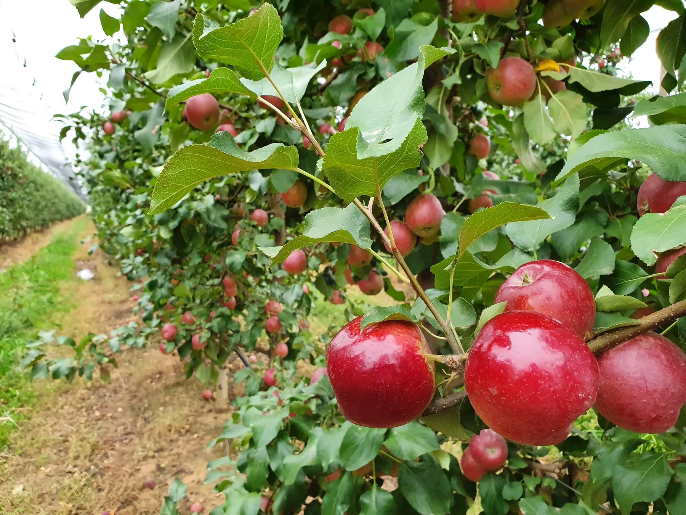

Foliar application
Plan the spray with the prescription.
Tell us your equipment, planned water volume and application timing. Water quality and the crop’s condition need to be considered before the rate, dilution and application are confirmed.

Leaf testing and DSA help us understand the crop’s Nutrient status. Hybrid-Ag uses the results and your growing conditions to formulate a liquid prescription blend where one is needed.
A standard liquid product has a fixed analysis. It may be suitable, but the crop’s requirements may call for a different formulation. A liquid prescription blend lets us work from the recommendation rather than choose a product first.
This approach can be discussed for Broadacre, horticulture, viticulture and small crops. The crop, stage of growth and intended application matter more than a fixed recipe. Soil and water results, recent applications and what you are seeing in the crop help the agronomist interpret the plant data.

Standard tissue testing and Differential Sap Analysis measure different material. With DSA, young and old leaves collected together are analysed separately, giving the agronomist two results to compare rather than one combined sample.
The difference between them needs interpretation. Crop stage, growth, water, root conditions and recent inputs can affect the result. A higher or lower figure on its own is not a formula for the next blend.
We discuss what the results support, what needs further investigation and whether a liquid prescription is appropriate. Further testing may be useful before changing the recommendation.
The recommendation and the formulation are separate steps. First we work through the crop’s requirements. Then we consider how to supply the recommended nutrition through a suitable Hybrid-Ag liquid blend.
Confirm the crop, sampled area and test. Keep the date, stage and recent application history with the original report.
Review the plant results alongside growing conditions and any relevant soil or water information. Identify what the evidence supports addressing.
Select suitable Hybrid-Ag liquid products and proportions for the agreed requirement. The intended application and equipment are part of that decision.
Confirm the blend-specific directions, rate, dilution, timing and supply with the team before use. These details belong to the prescription, not a general recipe.
Discuss whether you intend to apply nutrition as a foliar spray or through fertigation. A liquid format does not make every blend suitable for both. The team needs to confirm the particular formulation and its directions.
Tell us your equipment, planned water volume and application timing. Water quality and the crop’s condition need to be considered before the rate, dilution and application are confirmed.
Bring the water report and details of the irrigation and injection system. The proposed blend needs to be assessed for that water source, delivery system and intended application.
Do not assume a custom blend can be combined with another product or used through a different system. Confirm mixing, compatibility, storage and handling directions for the supplied prescription with the team.
You can start with reports you already have. We will explain what they can tell us and whether more information is needed before a blend is recommended.
Include laboratory methods, units and reference ranges. For DSA, keep the young and old results separately identified.
Tell us the crop, variety, area and growth stage, along with recent inputs, irrigation and any changes you have noticed.
Discuss the delivery method, equipment and water source. Bring a water report if you have one.
Discuss the area to treat, timing and budget so the recommendation can be worked through before supply.
Keep the prescription and application details with the test report. They give the team a reference when reviewing later results and deciding whether the recommendation should change.
Repeat samples need to be collected on a comparable basis. Changes in growth stage, weather, water or other inputs can affect the comparison, so a change in the test result should not automatically be attributed to the blend.
Keep a useful test history